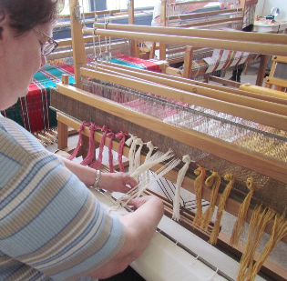

L’apprentissage profond est un type d’apprentissage par machine qui utilise entre autres des réseaux de neurones artificiels et du « Big Data » pour créer des réseaux complexes souvent utilisés pour comprendre des abstractions comme des images, du texte ou du son.
Un modèle est considéré profond lorsqu’il utilise plusieurs couches de réseaux de neurones.
Ce sont les modèles à apprentissage profond qui sont utilisés pour la reconnaissance de visages ou de la voix, et qui sont capables de générer du texte ou des images.
Les modèles d’apprentissage profond sont adeptes des images. Ils vous laissent donc ce rebus suivant :
Une fois résolu, entrez la réponse dans la barre de recherche, et accèdez à la dernière page du défi.